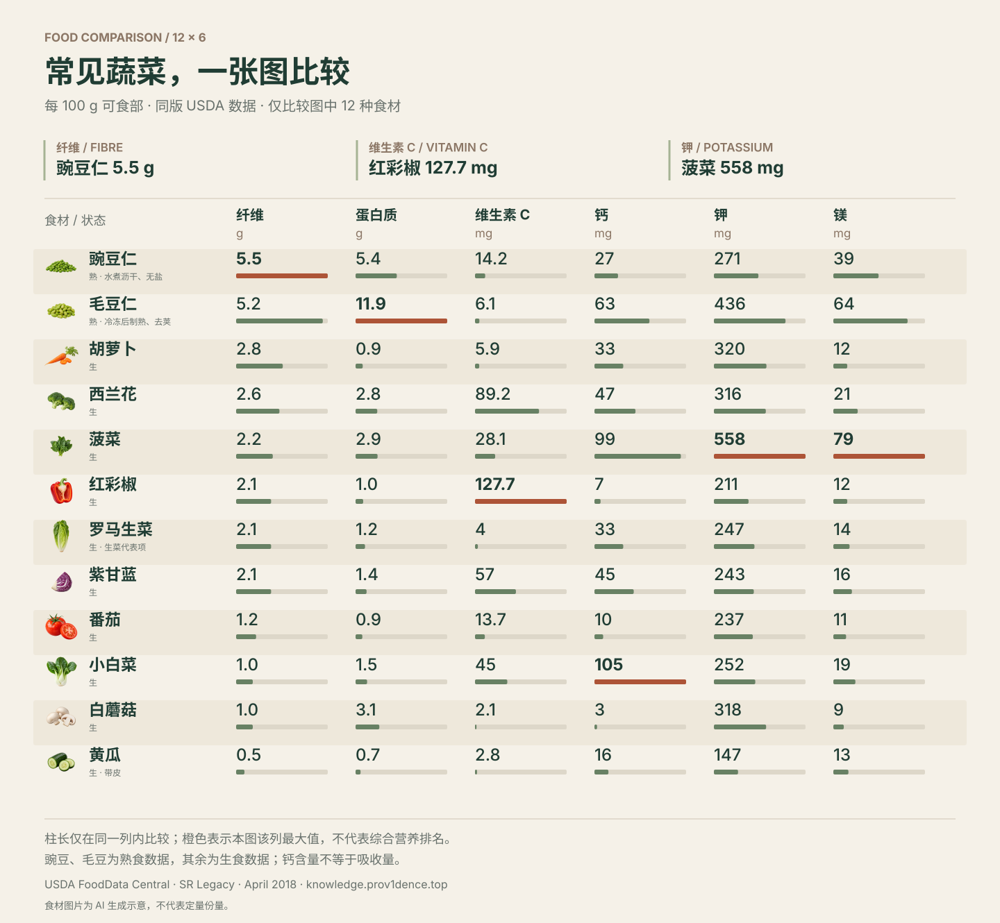

选择蔬菜的四个结论
深色叶菜搭配西兰花或彩椒，瓜类补充口感，毛豆另计豆类与能量。每 100 g 含量用于比较，每份摄入量用于配餐；总纤维由蔬菜、全谷物、豆类、水果和坚果共同提供。 [1], [10]
按营养目标选菜
| 目标 | 常见选择 | 份量与条件 |
|---|---|---|
| 增加纤维 | 毛豆、西兰花；搭配全谷物和杂豆 | 100 g 熟毛豆仁约含总膳食纤维 5.2 g；豆荚不计入食用重量。 [3] |
| 增加维生素 C | 红彩椒、青甜椒、西兰花 | NIH 表中生红甜椒半杯约 95 mg，青甜椒半杯约 60 mg；颜色、品种和烹调状态均影响结果。 [6] |
| 增加钙来源 | 小白菜、羽衣甘蓝等低草酸叶菜 | 可贡献膳食钙；菠菜钙吸收率较低。奶类、钙强化食品与叶菜可共同供钙。 [5] |
| 增加维生素 A 原 | 胡萝卜、深色叶菜 | β-胡萝卜素需经转化；其微克数不等于同量维生素 A。 [7] |
| 增加低能量食物体积 | 黄瓜、冬瓜、生菜 | 可与其他菜配餐；单项营养含量较低不能推出“没有营养”。能量还取决于油和酱料。 |
| 增加风味与食物种类 | 香菜、荠菜、西洋菜 | 可作为轮换食材；香菜等配菜的常用份量较小，不等于吃下 100 g。 |
一张图比较六项营养
每行一种食材，每列一种营养素。先按需要查列，再比较同列数值；柱长分别按各列最大值缩放，不计算综合得分。

查看完整数据与来源条目
| 食材与状态 | 纤维 / g | 蛋白质 / g | 维生素 C / mg | 钙 / mg | 钾 / mg | 镁 / mg |
|---|---|---|---|---|---|---|
| 豌豆仁 熟 · 水煮沥干、无盐 | 5.5 | 5.4 | 14.2 | 27 | 271 | 39 |
| 毛豆仁 熟 · 冷冻后制熟、去荚 | 5.2 | 11.9 | 6.1 | 63 | 436 | 64 |
| 胡萝卜 生 | 2.8 | 0.9 | 5.9 | 33 | 320 | 12 |
| 西兰花 生 | 2.6 | 2.8 | 89.2 | 47 | 316 | 21 |
| 菠菜 生 | 2.2 | 2.9 | 28.1 | 99 | 558 | 79 |
| 红彩椒 生 | 2.1 | 1.0 | 127.7 | 7 | 211 | 12 |
| 罗马生菜 生 · 生菜代表项 | 2.1 | 1.2 | 4 | 33 | 247 | 14 |
| 紫甘蓝 生 | 2.1 | 1.4 | 57 | 45 | 243 | 16 |
| 番茄 生 | 1.2 | 0.9 | 13.7 | 10 | 237 | 11 |
| 小白菜 生 | 1.0 | 1.5 | 45 | 105 | 252 | 19 |
| 白蘑菇 生 | 1.0 | 3.1 | 2.1 | 3 | 318 | 9 |
| 黄瓜 生 · 带皮 | 0.5 | 0.7 | 2.8 | 16 | 147 | 13 |
生菜使用罗马生菜单一条目，不代表所有生菜。毛豆、豌豆含有的蛋白质与能量也计入整餐；菠菜的钙利用率仍受草酸影响。
综合评价：看营养组合与互补
综合评价可以拆成四个问题，分别保留指标；避免某一项特别高，就被解释成整种食物“全面胜出”。
三种代表维生素的供给比例
每 100 g 可食部 · 相对于同一套 FDA 标签参考值的百分比
| 食材与状态 | 维生素 A100% = 900 μg RAE | 维生素 C100% = 90 mg | 叶酸 B9100% = 400 μg DFE |
|---|---|---|---|
 豌豆仁熟 · 水煮沥干、无盐 豌豆仁熟 · 水煮沥干、无盐 | 4% | 16% | 16% |
 毛豆仁熟 · 冷冻后制熟、去荚 毛豆仁熟 · 冷冻后制熟、去荚 | 2% | 7% | 78% |
 胡萝卜生 胡萝卜生 | 93% | 7% | 5% |
 西兰花生 西兰花生 | 3% | 99% | 16% |
 菠菜生 菠菜生 | 52% | 31% | 49% |
 红彩椒生 红彩椒生 | 17% | 142% | 12% |
 罗马生菜生 · 生菜代表项 罗马生菜生 · 生菜代表项 | 48% | 4% | 34% |
 紫甘蓝生 紫甘蓝生 | 6% | 63% | 5% |
 番茄生 番茄生 | 5% | 15% | 4% |
 小白菜生 小白菜生 | 25% | 50% | 17% |
 白蘑菇生 白蘑菇生 | 0% | 2% | 4% |
 黄瓜生 · 带皮 黄瓜生 · 带皮 | 1% | 3% | 2% |
读图结论：胡萝卜偏重维生素 A 原；红彩椒、西兰花偏重维生素 C；菠菜同时提供维生素 A 与叶酸；毛豆在叶酸和蛋白质上有贡献。不同食材的优势分布，构成搭配依据；三个百分比不相加为总分。 [7], [13]
查看原始含量与计算口径
百分比 = 每 100 g 的营养素含量 ÷ 对应 DV × 100%。维生素 A 已采用 RAE，叶酸采用 DFE；不直接把胡萝卜素重量当维生素 A。生熟状态与前图一致。
| 食材 | 维生素 A / μg RAE | 维生素 C / mg | 叶酸 B9 / μg DFE |
|---|---|---|---|
| 豌豆仁 · 熟 · 水煮沥干、无盐 | 40 | 14.2 | 63 |
| 毛豆仁 · 熟 · 冷冻后制熟、去荚 | 15 | 6.1 | 311 |
| 胡萝卜 · 生 | 835 | 5.9 | 19 |
| 西兰花 · 生 | 31 | 89.2 | 63 |
| 菠菜 · 生 | 469 | 28.1 | 194 |
| 红彩椒 · 生 | 157 | 127.7 | 46 |
| 罗马生菜 · 生 · 生菜代表项 | 436 | 4 | 136 |
| 紫甘蓝 · 生 | 56 | 57 | 18 |
| 番茄 · 生 | 42 | 13.7 | 15 |
| 小白菜 · 生 | 223 | 45 | 66 |
| 白蘑菇 · 生 | 0 | 2.1 | 17 |
| 黄瓜 · 生 · 带皮 | 5 | 2.8 | 7 |
现有每 100 kcal 营养密度评分提供另一种综合比较口径，但排名依赖所选营养素、权重与能量分母，不能替代实际份量与吸收条件。 [4]
纤维比较：同口径，再看份量
“生菜每 100 g 只有 0.7 g 纤维”不能代表所有生菜。香港食物安全中心明确区分：部分中国食物成分数据记录不溶性纤维，USDA 等数据记录总膳食纤维。品种差异与分析口径均会改变比较结果，原文未交代这些条件。 [2]
十二种常见食材的纤维比较
总膳食纤维 · 可食部 · 生菜仅保留罗马生菜作为代表
豌豆仁熟 · 水煮沥干、无盐毛豆仁熟 · 冷冻后制熟、去荚胡萝卜生西兰花生菠菜生红彩椒生罗马生菜生 · 生菜代表项紫甘蓝生番茄生小白菜生白蘑菇生黄瓜生 · 带皮查看数据表
| 食物与状态 | 总膳食纤维 g / 100 g |
|---|---|
| 豌豆仁 · 熟 · 水煮沥干、无盐 | 5.5 |
| 毛豆仁 · 熟 · 冷冻后制熟、去荚 | 5.2 |
| 胡萝卜 · 生 | 2.8 |
| 西兰花 · 生 | 2.6 |
| 菠菜 · 生 | 2.2 |
| 红彩椒 · 生 | 2.1 |
| 罗马生菜 · 生 · 生菜代表项 | 2.1 |
| 紫甘蓝 · 生 | 2.1 |
| 番茄 · 生 | 1.2 |
| 小白菜 · 生 | 1.0 |
| 白蘑菇 · 生 | 1.0 |
| 黄瓜 · 生 · 带皮 | 0.5 |
图表统一采用 USDA SR Legacy 同版总膳食纤维数据，生熟状态逐项标注；熟毛豆与生菜的数据用于配餐估算，不能用于推断烹调提高纤维含量。 [13]
一份的贡献 = 每 100 g 含量 × 可食份量 ÷ 100。200 g 生西兰花与 100 g 熟毛豆仁合计约 10.4 g 纤维，仍只覆盖全天参考量的一部分。“靠生菜吃够全部纤维需要几斤”是单一食物的算术外推，不是合理的配餐目标。
营养排名能说明什么
2014 年的研究对 47 种蔬果计算评分，按每 100 kcal 的 17 项营养素进行比较，西洋菜得分 100。分数设有上限，且未覆盖所有植物化学物；这不是完整营养评分，也不是临床健康效果排名。 [4]
同一研究中，叶用生菜 70.73、罗马生菜 63.48、西兰花 34.89。这与笼统的“生菜垫底”不符，也不意味着生菜在每项营养上都胜过西兰花。每份营养贡献还受实际食量影响。
“38 种蔬菜中荠菜第一、香菜第二”的说法，所提供正文没有可追溯的研究出处、指标权重与样本范围，暂不作为选菜依据。
几个容易误读的营养结论
含钙量 ≠ 吸收量
同为摄入 100 mg 钙时的算术示意
| 说法 | 补充条件 |
|---|---|
| 蔬菜钙含量比牛奶高，所以更补钙 | 含量、份量与吸收率共同决定贡献。NIH 汇总中菠菜钙吸收率约 5%，牛奶约 27%；这些不是适用于所有人、所有餐次的固定常数。低草酸叶菜的钙利用率较高，也不代表与牛奶整份营养等价。 [5] |
| 一颗彩椒必然满足一天维生素 C | 一颗的重量、可食率和品种不固定；长时间储藏与加热可降低维生素 C。按可食份量估算比按“颗”承诺更准确。 [6] |
| 胡萝卜素 2590 μg = 固定比例的每日维生素 A | 需明确是否为 β-胡萝卜素，以及采用 RE 还是 RAE。食物 β-胡萝卜素常按 6 μg = 1 μg RE，或 12 μg = 1 μg RAE；当量与参考摄入量的单位必须一致，原文的 33% 无法仅据该数字复核。 [7], [12] |
| 少量香菜或蒜，比一盘瓜菜更有营养 | 每 100 g 的优势不等于实际摄入量优势。例如沿用原文香菜维生素 C 48 mg / 100 g 的数值，5 g 配菜仅贡献 2.4 mg；这是份量换算，不是对原数值的独立确认。 |
| 西洋菜维生素 K 是羽衣甘蓝近两倍 | 没有匹配品种、生熟状态和数据条目，固定倍数无法成立。NIH 表列每杯或半杯，换算到每 100 g 还需对应重量。 [11] |
把结论转成一日配餐结构
450 g 的一日蔬菜组合
可食部生重 · 毛豆另计
- 小白菜200 g
- 西兰花100 g
- 红彩椒50 g
- 黄瓜50 g
- 冬瓜50 g
以下是450 g 非豆类蔬菜的组合示例，全部按可食部生重；属于份量演示，不是额外的摄入标准。深色蔬菜合计 350 g，约占 78%。
| 餐次 | 食材与份量 | 组成 |
|---|---|---|
| 午餐 | 小白菜 200 g + 黄瓜 50 g | 深色叶菜 + 瓜类 |
| 晚餐 | 西兰花 100 g + 红彩椒 50 g + 冬瓜 50 g | 十字花科 + 彩椒 + 瓜类 |
| 豆类另计 | 熟毛豆仁 50–100 g，可作为豆类选择之一 | 纤维约 2.6–5.2 g；计入整餐能量 |
香菜等按实际食量计入；全谷物、其他豆类和水果继续提供纤维。采购可以按“深色叶菜—西兰花或彩椒—瓜类”轮换，颜色是组织食材的线索，不能单独证明营养完整。 [1], [3]
烹调：保留营养与降低草酸
来源与说明
- 国家卫健委：健康饮食、合理膳食核心信息（2025）
- 香港食物安全中心：营养资料查询及纤维数据口径
- USDA：总膳食纤维参考表
- Di Noia（2014）：蔬果营养密度评分原始研究
- NIH ODS：钙含量与吸收
- NIH ODS：维生素 C 食物来源与烹调损失
- NIH ODS：类胡萝卜素与维生素 A 当量
- Chai & Liebman（2005）：烹调对蔬菜草酸的影响
- CDC：西洋菜等水生植物的肝片吸虫风险
- 国家卫健委：成人膳食纤维 25–30 g/d 的参考依据
- NIH ODS：维生素 K 食物数据与用药相互作用
- FAO：食物成分表达与 RE、RAE 换算
- USDA FoodData Central：SR Legacy 2018 年 4 月数据；完整表内链接至各 FDC 条目
- FDA：营养标签每日参考值 DV（维生素 A、C、叶酸）
数值用于食物选择与份量估算，不代表每个品种或每批产品的实测结果。原文引自所提供的微信文章正文，已与上述资料交叉核查；未获独立确认的排名与固定倍数不作为事实采用。本文为一般营养知识，不替代针对疾病、妊娠或特殊用药的个体化评估。